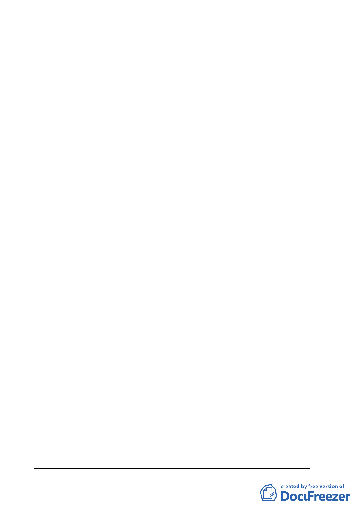

申請單位回應意見
一種資源浪費與浪費國庫金額。教育學生應該是
質的提升而不是建築過多的教室、宿舍、與營利
商店等。況且政治大學校地太多了，山後：從校
區直到樟山寺，這麼大的地面積要蓋什麼就有什
麼。校前有：化南新村、道南新村和其它地區。
政大要建捷運、要建其他的建築物，有太多的土
地可以利用、為什麼還需要我們居住三角地帶和
指南山莊呢？
四、台灣的民主到底達什麼程度，明明憲法規定有保障
人民居住、遷移以及土地私有的權利。為什麼政
治大學可以一手主導、閉門造車與自行規劃哪裏
要蓋捷運、哪裏要建道路、哪有要建商業區等等。
然後與政府單位用各種理由、強加於社區居民、
使居民生活受到干擾和生活不下去的感覺。請看
化南新村和道南新村，其徵收化南新村的土地原
用途是蓋商學院、後蓋教職員宿舍又變成大樓住
宅變賣眾所眾週知那是一個爭議的例子。如果能
翻案的話、請你們賠償原地主吧！
五、談到「政大大學周邊居民及商店」請政治大學高抬
貴手吧！放過我們吧！我們居住這三角地帶已有
三代以上，從指南路二段 119 巷到 167 號、我們
有合法的土地權狀及建物權狀，這是純粹私人土
地，與政治大學沒有任何瓜葛。請考量每戶住戶
的人數與家庭，而不是為了創造你們自認為的大
學城，來破壞居民情感意識連結性與住民流離失
所，你們於心何忍。你們說我們太亂不雅觀、其
實有可以改善：如建「形象商圈」或成立一個「整
齊劃一」的組織等等。
六、現在各國大學生都召不到學生，都來台招生，而且
台灣的大學也太多了，有的學校還召生不足。政
治大學應該教育學生向「質」的提升，反而是在
地盤擴充上花心思、連四周居民都不放過。我們
真的不知道政治大學是辦教育還是辦建築的，令
人困惑。
七、幾次協調會、我們居民來「會」簽名的人很多，請
你們知道我們簽名是「不同意」你們(政治大學)
的做法、要向你們(政治大學)說「反對的話」也
向政府說「反對的話」。
1. 未來指南山莊變更為大專用地後，依據都市計畫書內容規
定，政治大學將以生態永續、開放式設計進行用地規劃。
此外，兼顧水土、生態景觀資源及公共安全，指南山莊周
- 11 -